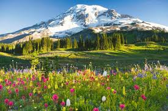
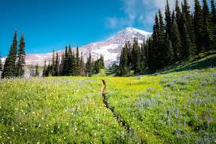
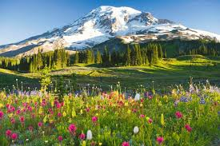
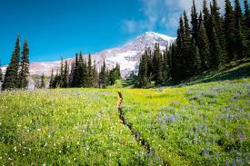

Popular Trails for Mt. Rainier
Wildlife:
Don't feed wildlife
Report sightings of bears and mountain lions to a ranger
Don't leave scraps of food behind
Camping:
Campgrounds are open during the summer season only
You may need a reservation to camp in a vehicle campground
You need a wilderness permit to backcountry camp
You can't sleep in your car in the parking lot or pullouts
Permits:
You need a Climbing Permit to climb or ski on a glacier or ascend above 10,000 feet
You need a wilderness permit to backcountry camp
You can make reservations for the National Park Inn or Paradise Inn with Rainier Guest Services
General:
Motorized boating is prohibited
Pets must be on leashes no longer than six feet
You can't destroy or disturb natural, cultural, or archeological features
You can't pollute or contaminate any water source
You can't leave trash in toilets or elsewhere in the wilderness